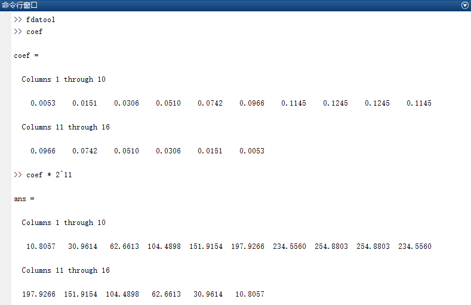

Serial FIR Filter Design
Design Description
The design parameters are unchanged and consistent with the parallel FIR filter parameters. That is, for the mixed sine wave input signals with frequencies of 7.5 MHz and 250 KHz, after passing through the FIR filter, the high-frequency signal at 7.5 MHz is filtered out, leaving only the 250 KHz signal.
输入频率： 7.5MHz 和 250KHz 采样频率： 50MHz 阻带： 1MHz-6MHz 阶数： 15 （N=15）
In the serial design, the 16 delayed data samples are sequentially processed through multiplication and addition operations in a time-division manner within 16 clock cycles, and then the filtered value is output under the clock drive. Considering the symmetry of the FIR filter coefficients, the period for computing one filtered output value can be reduced to 8 cycles. In the serial design, only one multiplication operation is performed per cycle, so only one multiplier is needed in the design. At this point, data needs to be validly input once every 8 clock cycles. However, to ensure the correctness of the output signal frequency, the working clock must be 8 times the sampling frequency, i.e., 400 MHz. The advantage of this method is low resource consumption, but it requires a high working frequency and the data cannot be continuously output.
Serial Design
For the multiplier module code used in the design, refer to the multiplier from the previous pipeline design.
For convenient and fast simulation, the multiplication sign can also be used directly*to complete the multiplication operation. A macro definition SAFE_DESIGN is added in the design to select which multiplier to use.
The FIR filter coefficients can be generated by MATLAB; see the appendix for details.
Example
>> Description : fir study with serial tech
>> V190403 : Fs:50Mhz, fstop:1-6Mhz, order:16, sys clk:400MHz
***********************************************************/
`define SAFE_DESIGN
module fir_serial_low(
input rstn,
input clk, // System working clock, 400MHz
input en , // Input data valid signal
input [11:0] xin, // Input mixed-frequency signal data
output valid, // Output data valid signal
output [28:0] yout // Output data
);
//delay of input data enable
reg [11:0] en_r ;
always @(posedge clk or negedge rstn) begin
if (!rstn) begin
en_r[11:0] <= 'b0 ;
end
else begin
en_r[11:0] <= {en_r[10:0], en} ;
end
end
//fir coeficient
wire [11:0] coe[7:0] ;
assign coe[0] = 12'd11 ;
assign coe[1] = 12'd31 ;
assign coe[2] = 12'd63 ;
assign coe[3] = 12'd104 ;
assign coe[4] = 12'd152 ;
assign coe[5] = 12'd198 ;
assign coe[6] = 12'd235 ;
assign coe[7] = 12'd255 ;
//(1) Input data shift section
reg [2:0] cnt ;
integer i, j ;
always @(posedge clk or negedge rstn) begin
if (!rstn) begin
cnt <= 3'b0 ;
end
else if (en || cnt != 0) begin
cnt <= cnt + 1'b1 ; //8-cycle count
end
end
reg [11:0] xin_reg[15:0];
always @(posedge clk or negedge rstn) begin
if (!rstn) begin
for (i=0; i<16; i=i+1) begin
xin_reg[i] <= 12'b0;
end
end
else if (cnt == 3'd0 && en) begin //Read valid data once every 8 cycles
xin_reg[0] <= xin ;
for (j=0; j<15; j=j+1) begin
xin_reg[j+1] <= xin_reg[j] ; // Data shift
end
end
end
//(2) Coefficients are symmetric; add the first and last data of the 16 shift registers
reg [11:0] add_a, add_b ;
reg [11:0] coe_s ;
wire [12:0] add_s ;
wire [2:0] xin_index = cnt>=1 ? cnt-1 : 3'd7 ;
always @(posedge clk or negedge rstn) begin
if (!rstn) begin
add_a <= 13'b0 ;
add_b <= 13'b0 ;
coe_s <= 12'b0 ;
end
else if (en_r[xin_index]) begin //from en_r[1]
add_a <= xin_reg[xin_index] ;
add_b <= xin_reg[15-xin_index] ;
coe_s <= coe[xin_index] ;
end
end
assign add_s = {add_a} + {add_b} ;
//(3) Multiplication operation, using only one multiplier
reg [24:0] mout ;
`ifdef SAFE_DESIGN
wire en_mult ;
wire [3:0] index_mult = cnt>=2 ? cnt-1 : 4'd7 + cnt[0] ;
mult_man #(13, 12) u_mult_single //Instantiate the self-designed pipeline multiplier
(.clk (clk),
.rstn (rstn),
.data_rdy (en_r[index_mult]), //Pay attention to the data timing correspondence
.mult1 (add_s),
.mult2 (coe_s),
.res_rdy (en_mult),
.res (mout)
);
`else
always @(posedge clk or negedge rstn) begin
if (!rstn) begin
mout <= 25'b0 ;
end
else if (|en_r[8:1]) begin
mout <= coe_s * add_s ; //Direct multiplication
end
end
wire en_mult = en_r[2];
`endif
//(4) Accumulation, 8 groups of 25-bit data -> 1 group of 29-bit data
reg [28:0] sum ;
reg valid_r ;
//mult output en counter
reg [4:0] cnt_acc_r ;
always @(posedge clk or negedge rstn) begin
if (!rstn) begin
cnt_acc_r <= 'b0 ;
end
else if (cnt_acc_r == 5'd7) begin //Count 8 cycles
cnt_acc_r <= 'b0 ;
end
else if (en_mult || cnt_acc_r != 0) begin //As long as en is valid, the counting continues
cnt_acc_r <= cnt_acc_r + 1'b1 ;
end
end
always @(posedge clk or negedge rstn) begin
if (!rstn) begin
sum <= 29'd0 ;
valid_r <= 1'b0 ;
end
else if (cnt_acc_r == 5'd7) begin //Output the filtered value in the 8th accumulation cycle
sum <= sum + mout;
valid_r <= 1'b1 ;
end
else if (en_mult && cnt_acc_r == 0) begin //Initialization
sum <= mout ;
valid_r <= 1'b0 ;
end
else if (cnt_acc_r != 0) begin //acculating between cycles
sum <= sum + mout ;
valid_r <= 1'b0 ;
end
end
//Latch valid output data on the clock edge so that the output signal does not change too frequently
reg [28:0] yout_r ;
always @(posedge clk or negedge rstn) begin
if (!rstn) begin
yout_r <= 'b0 ;
end
else if (valid_r) begin
yout_r <= sum ;
end
end
assign yout = yout_r ;
//(5) Output data valid delay; that is, discard the first 15 filtered values
reg [4:0] cnt_valid ;
always @(posedge clk or negedge rstn) begin
if (!rstn) begin
cnt_valid <= 'b0 ;
end
else if (valid_r && cnt_valid != 5'd16) begin
cnt_valid <= cnt_valid + 1'b1 ;
end
end
assign valid = (cnt_valid == 5'd16) & valid_r ;
endmodule
testbench
The testbench is written as follows. Its main function is to continuously input the mixed sine wave signal data of 250KHz and 7.5MHz without interruption. The input mixed signal data can also be generated by MATLAB; see the appendix for details.
Here, the working frequency is 400MHz, but the input data and the input data valid signal should both be input at a frequency of 50MHz.
Example
//input
reg clk ;
reg rst_n ;
reg en ;
reg [11:0] xin ;
//output
wire [28:0] yout ;
wire valid ;
parameter SIMU_CYCLE = 64'd1000 ;
parameter SIN_DATA_NUM = 200 ;
//=====================================
// 8*50MHz clk generating
localparam TCLK_HALF = (10_000 >>3);
initial begin
clk = 1'b0 ;
forever begin
# TCLK_HALF clk = ~clk ;
end
end
//============================
// reset and finish
initial begin
rst_n = 1'b0 ;
# 30 rst_n = 1'b1 ;
# (TCLK_HALF * 2 * 8 * SIMU_CYCLE) ;
$finish ;
end
//=======================================
// read cos data into register
reg [11:0] stimulus [0: SIN_DATA_NUM-1] ;
integer i ;
initial begin
$readmemh("../tb/cosx0p25m7p5m12bit.txt", stimulus) ;
en = 0 ;
i = 0 ;
xin = 0 ;
# 200 ;
forever begin
repeat(7) @(negedge clk) ; //Idle for 7 cycles, provide data in the 8th cycle
en = 1 ;
xin = stimulus[i] ;
@(negedge clk) ;
en = 0 ; //The input data valid signal only needs to last for one cycle
if (i == SIN_DATA_NUM-1) i = 0 ;
else i = i + 1 ;
end
end
fir_serial_low u_fir_serial (
.clk (clk),
.rstn (rst_n),
.en (en),
.xin (xin),
.valid (valid),
.yout (yout));
endmodule
Simulation Results
From the simulation results in the figure below, it can be seen that the signal after the FIR filter contains only one low-frequency signal (250KHz), and the high-frequency signal (7.5MHz) has been filtered out. For a more aesthetically pleasing waveform, the filtered data after the first 16 samples are taken as the valid output.

The locally enlarged waveform is shown in the figure below. At this time, the input data valid signal en and the output data valid signal valid are pulse signals with the same period (50MHz), and are not continuously valid. However, since the working clock is 400MHz, the output will also appear as a sine wave signal with a frequency of 250KHz at a sampling frequency of 50MHz.

Appendix: MATLAB Usage (same as"Parallel FIR Filter Design"consistent)
Generate FIR Filter Coefficients
Open MATLAB, enter the command in the command window: fdatool.
Then the following window will open. Set it according to the FIR filter parameters, as shown below.
The FIR implementation method selected here is the least-squares method (Least-squares). Different implementation methods also produce different filtering effects.

Click File -> Export
Export the filter parameters and store them in the variable coef, as shown in the figure below.

At this time, the coef variable should be floating-point data. Multiply it by a certain factor to scale it up, and then take its approximate fixed-point data as the FIR filter parameters in the design. Here the scaling factor is 2048, and the results are as follows.

Generate the Input Mixed Signal
The reference code for generating the mixed input signal using MATLAB is as follows.
The signal is unsigned fixed-point data with a bit width of 12 bits, stored in the filecosx0p25m7p5m12bit.txt 。
Example
%=======================================================
% generating a cos wave data with txt hex format
%=======================================================
fc = 0.25e6 ; %Center frequency
fn = 7.5e6 ; %Clutter frequency
Fs = 50e6 ; %Sampling frequency
T = 1/fc ; %Signal period
Num = Fs * T ; %Number of signal sampling points per period
t = (0:Num-1)/Fs ; %Discrete time
cosx = cos(2*pi*fc*t) ; %Center frequency sine signal
cosn = cos(2*pi*fn*t) ; %Clutter signal
cosy = mapminmax(cosx + cosn) ; %Amplitude expanded to (-1,1) range
cosy_dig = floor((2^11-1) * cosy + 2^11) ; %Amplitude expanded to0~4095
fid = fopen('cosx0p25m7p5m12bit.txt', 'wt') ; %Write data file
fprintf(fid, '%x\n', cosy_dig) ;
fclose(fid) ;
%Time domain waveform
figure(1);
subplot(121);plot(t,cosx);hold on ;
plot(t,cosn) ;
subplot(122);plot(t,cosy_dig) ;
%Frequency domain waveform
fft_cosy = fftshift(fft(cosy, Num)) ;
f_axis = (-Num/2 : Num/2 - 1) * (Fs/Num) ;
figure(5) ;
plot(f_axis, abs(fft_cosy)) ;